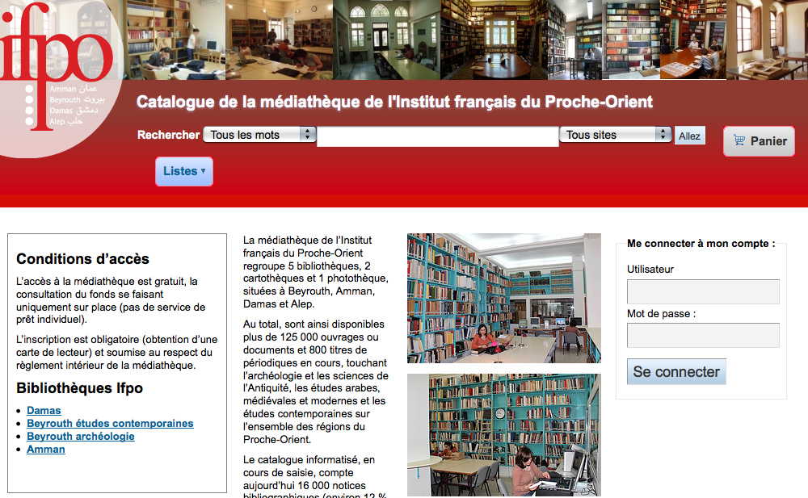
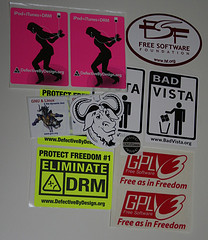

Software Freedom - The Koha story
Who am I?
- Kāi Tahu, Kāti Mamoe, Waitaha
- BSc Compsci, BA Maths and Māori Studies
- One of the original Koha developers
- Been working in software development since 1995
- Working at Catalyst IT

What do I do?
Sourced: gifbin.com
To create things like this

Free Software

- The freedom to run the program, for any purpose (freedom 0).
- The freedom to study how the program works, and change it to make it do what you wish (freedom 1). Access to the source code is a precondition for this.
- The freedom to redistribute copies so you can help your neighbour (freedom 2).
- The freedom to distribute copies of your modified versions to others (freedom 3). By doing this you can give the whole community a chance to benefit from your changes. Access to the source code is a precondition for this.
Why do I talk about Free Software?
- Code quality, more features, lower TCO are nice but ...
- Freedom is better
- Open Source puts the emphasis on the development model
- Free Software puts the emphasis on Freedom
Brief history of Koha
- Started in 1999 as a y2k fix
- Went live January 3 2000
- Released June 2000
- Over 15,000 libraries using Koha (that we know of)
- Over 300 developers
Questions
Raymond Bryson CC-BY
#